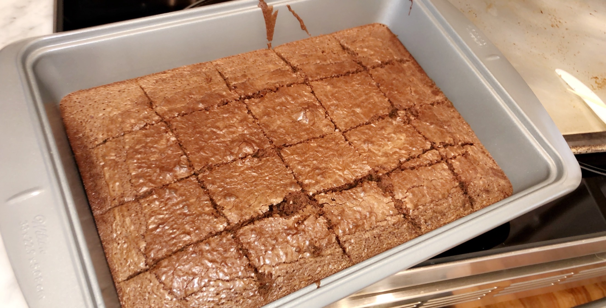

Why do I love making food so much? It's because I get to eat it in the end! The process of cooking is so fun because I can make anything I want, whether it be a bowl of soup or sweet chocolate chip cookies.
Brownies 
Use this recipe to make delicious brownies! Brownie Recipe
Coffee
Ingredients
2 tablespoons instant coffee
2 tablespoons sugar
2 tablespoons hot water
1 cup milk
Instructions
Whip instant coffee, sugar, and water in a bowl until it is a creamy consistency